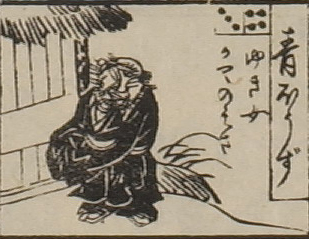

青坊主；アオボウズ，男；オトコ，三つ目；ミツメ

青坊主。顎ひげを生やしている。額の真中に三つ目の目がついているようであり、両目は閉じている。黒い僧衣をまとい、下駄を履いている。尻尾が生えているように見える。茅葺屋根の建物の前に立っている。
出典：親書誌：U426_nichibunken_0082：新版妖怪飛巡雙六；シンパンヨウカイトビマハリスゴロク／日付：2007／資源識別子：U426_nichibunken_0082_0019_0000
Copyright (c)2010- International Research Center for Japanese Studies, Kyoto, Japan. All rights reserved.